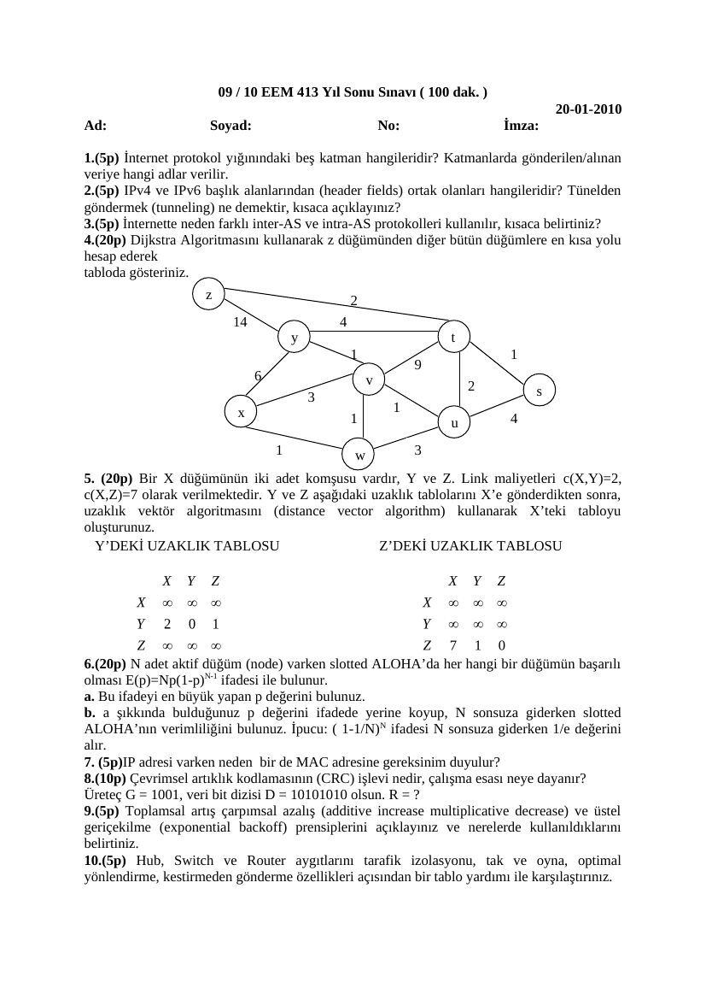
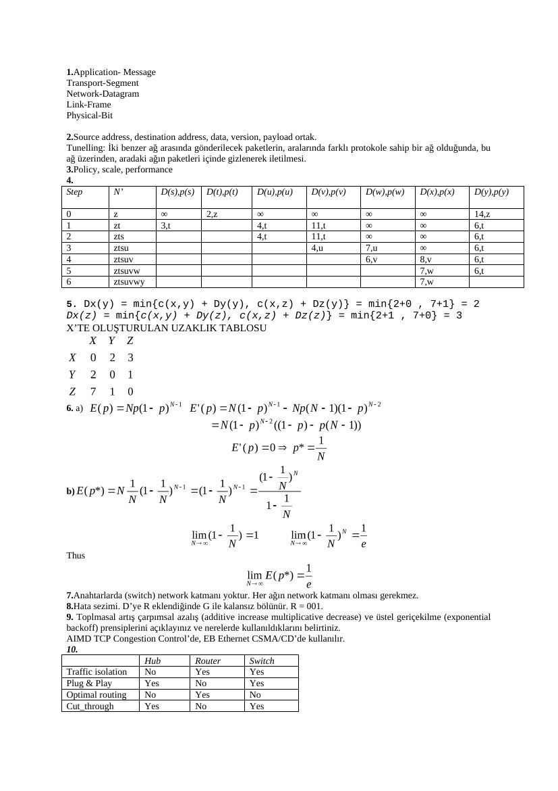

· EEM413
EEM413 Bilgisayar Ağları: 2010 Finali: Yönlendirme, ALOHA ve CRC
EEM413 – Bilgisayar Ağları · 20.01.2010 · 18.10.2026
Başkent Üniversitesi, Avcıbaş imzalı 20 Ocak 2010 final sınavı ve cevap anahtarıdır. Belgelerin PDF kopyaları yazının sonunda indirilebilir.
EEM413 Final 2010
09 / 10 EEM 413 Yıl Sonu Sınavı ( 100 dak. ) 20-01-2010
1. (5p) İnternet protokol yığınındaki beş katman hangileridir? Katmanlarda gönderilen/alınan veriye hangi adlar verilir.
2. (5p) IPv4 ve IPv6 başlık alanlarından (header fields) ortak olanları hangileridir? Tünelden göndermek (tunneling) ne demektir, kısaca açıklayınız?
3. (5p) İnternette neden farklı inter-AS ve intra-AS protokolleri kullanılır, kısaca belirtiniz?
4. (20p) Dijkstra Algoritmasını kullanarak z düğümünden diğer bütün düğümlere en kısa yolu hesap ederek tabloda gösteriniz. z 2 14 4 y t 1 1 6 v 2 s x 1 1 u 4
1 w 3
5. (20p) Bir X düğümünün iki adet komşusu vardır, Y ve Z. Link maliyetleri c(X,Y)=2, c(X,Z)=7 olarak verilmektedir. Y ve Z aşağıdaki uzaklık tablolarını X’e gönderdikten sonra, uzaklık vektör algoritmasını (distance vector algorithm) kullanarak X’teki tabloyu oluşturunuz. Y’DEKİ UZAKLIK TABLOSU Z’DEKİ UZAKLIK TABLOSU
6. (20p) N adet aktif düğüm (node) varken slotted ALOHA’da her hangi bir düğümün başarılı olması E(p)=Np(1-p)N-1 ifadesi ile bulunur. a. Bu ifadeyi en büyük yapan p değerini bulunuz. b. a şıkkında bulduğunuz p değerini ifadede yerine koyup, N sonsuza giderken slotted ALOHA’nın verimliliğini bulunuz. İpucu: ( 1-1/N) N ifadesi N sonsuza giderken 1/e değerini alır.
7. (5p)IP adresi varken neden bir de MAC adresine gereksinim duyulur?
8. (10p) Çevrimsel artıklık kodlamasının (CRC) işlevi nedir, çalışma esası neye dayanır? Üreteç G = 1001, veri bit dizisi D = 1010 1010 olsun. R = ?
9. (5p) Toplamsal artış çarpımsal azalış (additive increase multiplicative decrease) ve üstel geriçekilme (exponential backoff) prensiplerini açıklayınız ve nerelerde kullanıldıklarını belirtiniz.
10. (5p) Hub, Switch ve Router aygıtlarını tarafik izolasyonu, tak ve oyna, optimal yönlendirme, kestirmeden gönderme özellikleri açısından bir tablo yardımı ile karşılaştırınız.

EEM413 Final 2010 Cevap Anahtar
1. Application- Message Transport-Segment Network-Datagram Link-Frame Physical-Bit
2. Source address, destination address, data, version, payload ortak. Tunelling: İki benzer ağ arasında gönderilecek paketlerin, aralarında farklı protokole sahip bir ağ olduğunda, bu ağ üzerinden, aradaki ağın paketleri içinde gizlenerek iletilmesi.
3. Policy, scale, performance
4. Step N’ D(s),p(s) D(t),p(t) D(u),p(u) D(v),p(v) D(w),p(w) D(x),p(x) D(y),p(y)
0 z ∞ 2,z ∞ ∞ ∞ ∞ 14,z 1 zt 3,t 4,t 11,t ∞ ∞ 6,t 2 zts 4,t 11,t ∞ ∞ 6,t 3 ztsu 4,u 7,u ∞ 6,t 4 ztsuv 6,v 8,v 6,t 5 ztsuvw 7,w 6,t 6 ztsuvwy 7,w
5. Dx(y) = min{c(x,y) + Dy(y), c(x,z) + Dz(y)} = min{2+0 , 7+1} = 2 Dx(z) = min{c(x,y) + Dy(z), c(x,z) + Dz(z)} = min{2+1 , 7+0} = 3 X’TE OLUŞTURULAN UZAKLIK TABLOSU
6. a)
b)
Thus
7. Anahtarlarda (switch) network katmanı yoktur. Her ağın network katmanı olması gerekmez.
8. Hata sezimi. D’ye R eklendiğinde G ile kalansız bölünür. R = 001.
9. Toplmasal artış çarpımsal azalış (additive increase multiplicative decrease) ve üstel geriçekilme (exponential backoff) prensiplerini açıklayınız ve nerelerde kullanıldıklarını belirtiniz. AIMD TCP Congestion Control’de, EB Ethernet CSMA/CD’de kullanılır.
10. Hub Router Switch Traffic isolation No Yes Yes Plug & Play Yes No Yes Optimal routing No Yes No Cut_through Yes No Yes

Not: CRC kalanı 001; ALOHA için p = 1/N ve limit 1/e; uzaklık vektörü için Dₓ(y) = 2, Dₓ(z) = 3 sonuçları doğrulanmıştır. Dijkstra anahtarında u→v maliyeti 1 olmasına rağmen v toplam maliyeti 4 yazılmıştır; z’den v’ye en kısa mesafe 5’tir.